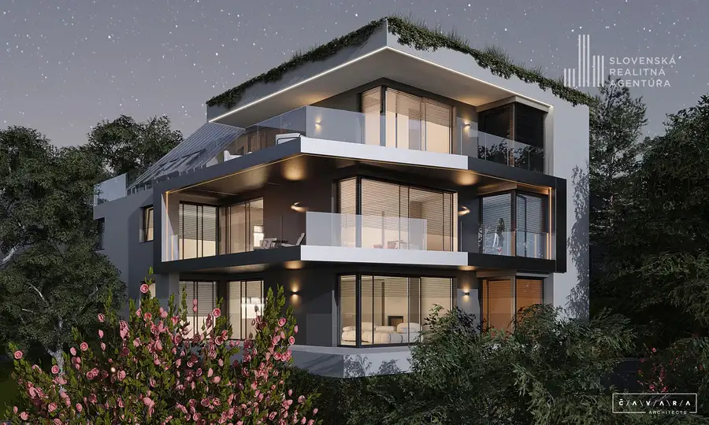
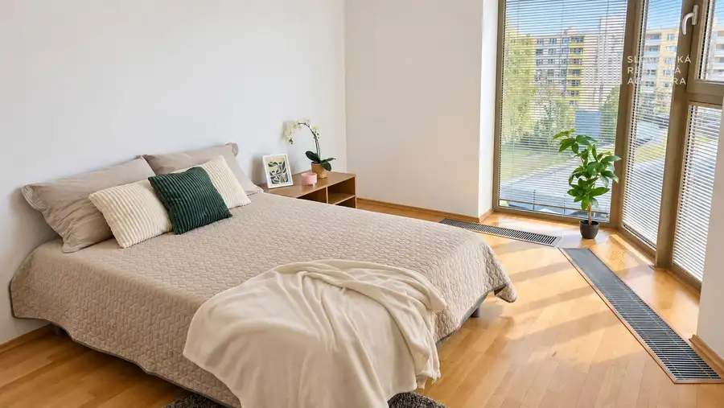

SRA | 2i byt pri Dulovom námestí, s tichou a slnečnou orientáciou, Niťová ul.
Ružinov, Bratislava
- Dispozícia2-izbový
- Plocha52.88 m²
- Poschodie2. z 6
- StavKompletná rekonštrukcia
- Energetická triedaB
O nehnuteľnosti
Mať centrum mesta na dosah a zároveň bývať v tichom prostredí patrí v Bratislave medzi vzácne kombinácie. Presne túto kombináciu ponúka slnečný 2-izbový byt na Niťovej ulici, pri Dulovom námestí a OC Nivy, na obľúbenom rozhraní Ružinova a Starého Mesta. Bytový dom sa nachádza v pokojnej ulici mimo hlavného mestského ruchu a samotný byt je orientovaný na západ, do tichého vnútrobloku.10 FAKTOV O NEHNUTEĽNOSTI■ 2 obytné miestnosti■ 52,88 m² podlahová plocha bytu■ 2. poschodie zo 6 s výťahom■ západná orientácia ■ veľké francúzske okno v obývacej izbe■ klimatizácia■ vlastné kúrenie – nový plynový kotol menený v roku 2026■ Mesačné náklady: 135 € (správca), 90 € (elektrina a plyn)■ kolaudácia bytového domu v roku 2004■ parkovanie v okolí bytového domu v režime PAASDISPOZÍCIAByt má praktickú a funkčnú dispozíciu. Zo vstupnej haly sa prechádza do kuchyne, ktorá prirodzene nadväzuje na obývaciu izbu s veľkým francúzskym oknom. Samostatná spálňa ponúka dostatok priestoru aj na úložné riešenia.Kúpeľňa je spojená s WC, vybavená sprchovacím kútom a priestorom na práčku.Príjemným prvkom bytu je veľké francúzske okno a západná orientácia, vďaka ktorej má interiér dostatok popoludňajšieho svetla. Okná sú orientované do tichého prostredia.BYTOVÝ DOMByt sa nachádza na 2. nadzemnom podlaží bytového domu s výťahom, skolaudovaného v roku 2004.Samotné situovanie bytového domu v pokojnej ulici v širšom centre mesta predstavuje obrovskú výhodu.Byt má vlastné kúrenie a ohrev vody prostredníctvom plynového kotla, takže teplotu a tepelný komfort máte vo vlastných rukách. Plynový kotol bol navyše v roku 2026 vymenený za nový.Parkovanie v okolí bytového domu funguje v regulovanom systéme PAAS.LOKALITANiťová ulica leží na rozhraní Ružinova a Starého Mesta a patrí k miestam, kde môžete veľkú časť každodenného života vybaviť jednoducho pešo.Dulovo námestie s kaviarňami a reštauráciami máte prakticky za rohom, OC Nivy je len pár minút chôdze a neďaleko je aj trhovisko Miletičova. V okolí nechýbajú obchody, služby ani výborné spojenie MHD. Do centra Bratislavy sa pohodlne dostanete pešo a autom oceníte rýchle napojenie na hlavné dopravné ťahy a obchvat.Lokalita je zároveň veľmi atraktívna aj z investičného pohľadu. Nehnuteľnosti v tejto časti Bratislavy si dlhodobo držia svoju hodnotu s potenciálom ďalšieho rastu, čo z bytu robí zaujímavú voľbu nielen na vlastné bývanie, ale aj ako investíciu na prenájom.PREČO PRÁVE TENTO BYT?■ poloha, ktorá sa na trhu objavuje len zriedka – širšie centrum a pritom pokojné bývanie■ vlastné kúrenie s novým plynovým kotlom ■ výborná voľba na vlastné bývanie aj prenájomCENA304 900 €Cena zahŕňa kompletnú províziu realitnej kancelárie, profesionálny právny servis zabezpečený advokátskou kanceláriou, úhradu správnych poplatkov na katastri, asistenciu pri vybavovaní hypotekárneho úveru a odborné realitné poradenstvo.Radi vám byt osobne predstavíme na obhliadke.KONTAKTIng. Eva Fabianová, RSc.Slovenská realitná agentúraMájkova 3, 811 07 Bratislava +421 908 156 112 fabianova@sra.sk www.sra.skRealitná kancelária je členom Realitnej únie SR.
Parametre
| Cena vrátane energií | Nie |
|---|---|
| Druh | 2 izbový byt |
| Dátum zverejnenia | 25. 8. 2026 |
| Energetický certifikát budovy | B |
| Orientácia | Západná |
| Podlažie | 2 |
| Počet izieb / miestností | 2 |
| Počet nadzemných podlaží | 6 |
| Počet spální | 1 |
| Rok výstavby | 2004 |
| Stav nehnuteľnosti | Kompletná rekonštrukcia |
| Typ | Predaj |
| Typ konštrukcie | Zmiešaná |
| Vybavenie | Výťah |
| Vykurovanie | Klimatizacia, Lokálne |
| Úžitková plocha | 52.88 m² |
Kde to je


Mohlo by Vás zaujímať

BytNové10 850 000 €SRA | Práve dokončený výnimočný 5-izbový byt z dielne renomovaných architektov, Staré Mesto Staré Mesto, Bratislava 185.92 m²1. podlažie Ponúkame na predaj jedinečný veľkometrážny 5-izbový byt v mestskej vile Delta len s tromi bytovými jednotkami a nádherným výhľadom na Bratislavu,…
BytNové10 279 900 €SRA | Veľkorysý 2-izbový byt s potenciálom tretej izby – 79,66 m² vo Vienna Gate Petržalka, Bratislava 2-izbový79.66 m²5. podlažie Ponúkame na predaj nadštandardný 2-izbový byt v projekte Vienna Gate na Kopčianskej ulici v Bratislave. Veľkorysá výmera 79,66 m² a veľkoformátové…